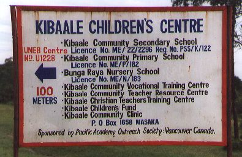
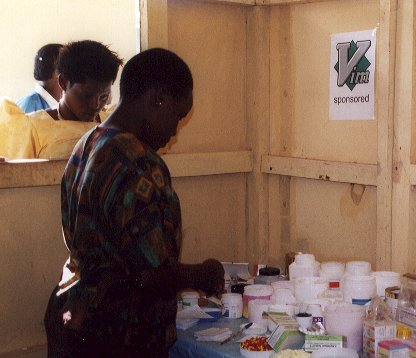
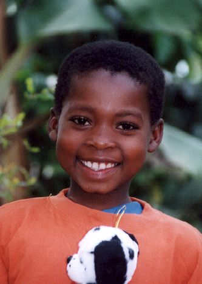

Oktober 2001
Bram Moolenaar, penningmeester van ICCF Holland, bezocht het Kibaale Children's centre in oktober 2001. Dit is zijn verslag.
Eerste indruk
|
Er is meer dan een jaar verstreken sinds mijn laatste bezoek. Het project is verder gegroeid en is volwassener geworden. Er zijn een paar nieuwe gebouwen, er is meer personeel en meer kinderen worden geholpen. Het centrum bestaat nu uit een groot aantal afdelingen, wat te zien is op het bord bij de ingang. Omdat het centrum nu vele jaren bestaat moet er meer aandacht worden gegeven aan onderhoud. Een aantal van de latrines wordt vervangen door nieuwe. Een aantal regenwatertanks is doorgeroest en moet vervangen worden (een ervan is een maand terug uit elkaar geploft). De nieuwe tanks zijn van kunststof in plaats van ijzer. Ze zijn wat duurder in aanschaf maar gaan veel langer mee. Deze keuze is een indicatie dat het project aan de lange termijn denkt.
|

|
Uganda is drukker geworden. Dat is te zien aan het aantal autos op de wegen en de dikte van de kranten. De mobiele telefoon heeft Kibaale bereikt. Je moet wel op een heuvel gaan staan en het weer moet meewerken, maar dan kan je ook de hele wereld bellen. Helaas is het niet mogelijk om naar het project te bellen, omdat heuvels het signaal blokkeren. Ik heb gesuggereerd om een antenne te plaatsen, maar het is niet duidelijk waar die te koop is en of het wel zal werken. Om een fax te versturen moeten ze nog steeds naar Masaka rijden, dat kost een uur.
School
Het totaal aantal kinderen op de school is nu ongeveer 480. Dit jaar zijn er twee klassen toegevoegd, P1 en S1 zijn verdubbeld. Het plan is om de komende jaren steeds twee klassen toe te voegen, zodat de school uiteindelijk verdubbeld. Een van de redenen is dat er voor de nieuwe klassen meer dan twee keer zoveel aanmeldingen waren als er plaats was. Het is niet makkelijk om zo veel kinderen te moeten teleurstellen. Wat mij niet duidelijk was is hoe de uitbreiding gefinancieerd zal worden.
Paul Horban is nu de directeur van de school. Hij en zijn vrouw Gwen zijn in 2000 bij het project begonnen en zijn nu gewend aan de Ugandese manier van doen. Ik ben er van overtuigd dat de school onder zijn leiding verder zal verbeteren. Het enige probleem is dat hij steeds wint met hartenjagen! Gwen leidt de bibliotheek, die nu is ondergebracht in een groter gebouw en de hele dag door de studenten gebruikt wordt. Het is er flink druk tot negen uur 'savonds, wanneer ze naar huis worden gestuurd. Een gedeelte van de giften van Vim gebruikers is gebruikt voor het verbeteren van de bibliotheek.
De school is nu officieel geregistreed. In November zullen voor de eerste keer de examens van de middelbare school op het centrum zelf plaatsvinden. Vorig jaar moesten de leerlingen nog twee weken naar Masaka, wat allerlei problemen en kosten met zich mee bracht. Dit is een teken dat de school volwassen is geworden en samenwerkt met de overheid.
Kliniek
|

|
De overheid van Uganda heeft medische hulp officieel gratis gemaakt. Alhoewel dat een prima idee lijkt te zijn, is het gevolg dat de overheids klinieken geen inkomen genereren en het moeten doen met het geld dat de overheid ter beschikking stelt - en dat is niet genoeg. Het resultaat is dat ze vaak zonder medicijnen zitten en het personeeel soms niet op komt dagen. Daarom komen de mensen rond Kibaale naar de KCC kliniek. Gemiddeld zijn er 600 patienten per week. Ze betalen een kleine bijdrage, waarvoor ze ook de nodige medicijnen krijgen. Dit is niet genoeg om de kosten te dekken. Maar de patienten kunnen niet echt meer betalen. Dus we kunnen dit alleen doen met hulp van sponsors en donaties.
Een nieuw laboratorium is bijna klaar om te gebruiken. Het zal mogelijk zijn om de belangrijkste bloed en urine onderzoeken te doen. Ik heb de laborant ontmoet en hij stond te popelen om te beginnen. Ik ben er in geslaagd een microscoop om te bouwen, zodat die met een 12 volt accu werkt. De koelkast werkt hier ook op, de zonnepanelen houden dus allebei aan de praat. Zodra het laboratorium open is kunnen de verpleegsters betere diagnoses stellen en wordt voorkomen dat patienten doorgestuurd moeten worden naar het ziekenhuis in Rakai (dat duur is, het kost tijd en er moet transport beschikbaar zijn).
|
Kinderen
Ik heb negen kinderen opgezocht die door ICCF Holland worden gesponsord. De meeste van hen had ik ook gezien tijdens mijn vorige reis, dus ik kon zien hoe ze vooruit waren gegaan. Alle kinderen hadden voldoende te eten, aangezien er dit jaar aardig wat regen is gevallen. Ze zagen er redelijk gezond uit, behalve eentje die liep te hoesten, hij was verkouden. Het kind wat ik zelf sponsor wordt behandeld voor epilepsie, wat hem goed lijkt te helpen. Hij woont bij zijn grootmoeder, die slecht kan zien. Er is geen andere volwassene in dit huis, wat het voor hen moeilijk maakt om te overleven. Ik heb ze een matras en wat extra dekens gegeven. We zullen ze wat extra moeten blijven helpen.
|
Een van de kinderen woonde vorig jaar nog in het dorp Kibaale. Haar tante, bij wie ze woonde, is eerder dit jaar overleden en nu woont ze bij een oom. Een nadeel hiervan is dat we een half uur moesten lopen naar het huis - hetzelfde pad dat ze gebruiken om water te halen. Voor het kind moet het verschikkelijk zijn om eerst haar ouders te verliezen en dan ook nog haar pleegmoeder. Desalniettemin lachte ze de hele tijd en was erg blij met de presentjes van haar sponsor. Het is verbazend hoe goed ze over de problemen heen komt en verder gaat met haar leven.
Slechts een van de kinderen die via ICCF Holland gesponsord worden is uit het programma gevallen. Hij was er vorig jaar bij gekomen, maar dit jaar kwam hij vaak niet naar school. Er is met hem gepraat om een oplossing te vinden voor zijn problemen, maar het heeft niet geholpen. Daarom hebben we besloten hem niet langer te helpen. Als we in gedachten houden met welke problemen deze kinderen geconfronteerd worden is het niet vreemd dat er zo nu en dan een uit het programma valt. Gelukkig is het de laatste jaren zelden gebeurd (ongeveer twee procent).
|

|
Kleine leningen
Kibaale is een agrarisch gebied. De meeste mensen hebben een stukje land en kunnen daar genoeg verbouwen om van te kunnen eten. Maar ze hebben vaak geen geld om essentiele dingen te kopen zoals schoenen of lampolie. Om de families te helpen met het opzetten van een winstgevende handel hebben we leningen verstrekt aan een aantal groepen. Deze groepen bestaan uit ongeveer zes vrouwen, die samen een business plan maken. Elk persoon in de groep is verantwoordelijk voor het terugbetalen van de lening, wat veel helpt voor de selectie van de groep. Het lijkt me een erg slim systeem, het moet veel beter werken als persoonlijke leningen. Maar het programma was nog maar net begonnen, we zullen pas later zien wat de resultaten zijn.
Conclusie
Ik was onder de indruk van de voortdurende groei van het project. Meer kinderen worden geholpen en ik kan zien dat ze opgroeien en verantwoordelijke mensen worden. De meest noodzakelijke zaken worden verstrekt, zoals de medische hulp in de kliniek. Dit alles moet betaald worden. Hopelijk vinden we nieuwe sponsors voor de kinderen in de school en krijgen we donaties voor de kliniek. Ik heb opnieuw gezien dat het geld goed besteed wordt en het de mensen in Kibaale goed helpt.
meer fotos
top
|